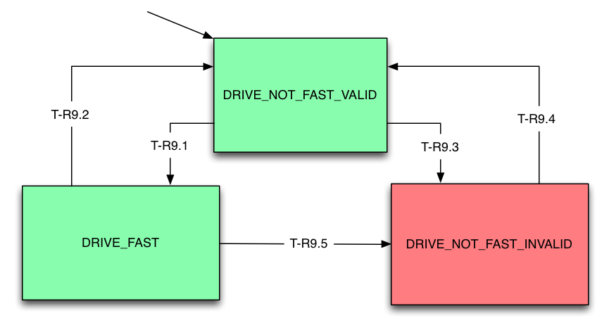
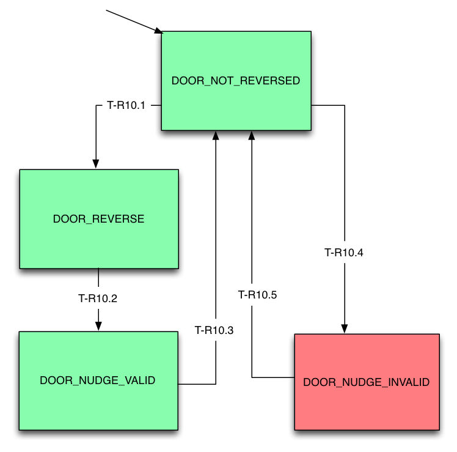

High Level Requirements:
R-T6: The Car shall only stop at Floors for which there are
pending calls.
R-T7: The Car shall only open Doors at Hallways for which there
are pending calls.
R-T8: The Car Lanterns shall be use in a way that does not confuse
passengers.
R-T9: The Drive shall be commanded to fast speed to the maximum
degree practicable.
R-T10: For each stop at a floor, at least one door reversal shall
have occured before the doors are commanded to nudge.
R-T9: The Drive shall be commanded to fast speed to the maximum
degree practicable.
The monitor should check to see whether the Drive is not commanded
to fast when it should be via commit-point, and current car
position, and throw a warning if not.
R-T10: For each stop at a floor, at least one door reversal shall
have occured before the doors are commanded to nudge.
The monitor should check to see whether any door has been
commanded to nudge when there has not been any prior door
reversals, and throw a warning if so.
If a door reversal has occurred, a message should be output
indicating such, so that return from invalid state can be
determined.
Runtime Monitor State Chart:
| Transition |
Condition |
| T-R6.1 |
mDriveSpeed != Stop |
| T-R6.2 | mDriveSpeed == Stop
&& floor == mDesiredFloor.f |
| T-R6.3 | mDriveSpeed == Stop
&& floor != mDesiredFloor.f |
| T-R6.4 | mDriveSpeed != Stop |
Runtime Monitor State Chart:

Note:
- Network message mDesiredFloor is updated by
Dispatcher to service the nearest pending call.
- Transition to the invalid state also requires
mAtFloor[f,b]==True, given that this would otherwise generate a
fault.
- These transitions are based on BR5.7 and
BR5.8, and hence T5.2 and T5.11
| Transition |
Condition |
| T-R7.1 |
(any mDoorMotor[b,r]==Open) && (mAtFloor[f,b]==True && mDesiredFloor.f==f) && (mDesiredFloor.h==b || mDesiredFloor.h==BOTH) |
| T-R7.2 | mDoorOpened[b,r]==True |
| T-R7.3 | (any mDoorMotor[b,r]==Open) && (mAtFloor[f,b]==True) && [ (mDesiredFloor.f!=f) || (mDesiredFloor.h!=b && mDesiredFloor.h!=BOTH) ] |
| T-R7.4 | mDoorOpened[b,r]==True |
Runtime Monitor State Chart:

Note:
- The invalid state occurs when all
CarLantern[d] fail to turn on when the conditions of R-T8.1 are
asserted.
- These transitions are based on BR7.2, and
hence T7.1
| Transition |
Condition |
| T-R8.1.1 |
(CarLantern[d]==ON) && (mAtFloor[f,b] == true) && (mDesiredFloor.f == f) && (mDesiredFloor.d == d) && (any mDoorClosed[b,r] == false) |
| T-R8.1.2 | (mDesiredFloor.d != d) || (all mDoorClosed[b,r] == true) |
| T-R8.1.3 | (CarLantern[d]==OFF) && (mAtFloor[f,b] == true) && (mDesiredFloor.f == f) && (mDesiredFloor.d == d) && (any mDoorClosed[b,r] == false); |
| T-R8.1.4 | (mDesiredFloor.d != d) || (all mDoorClosed[b,r] == true) |
Runtime Monitor State Chart:

Note:
- These transitions are based on BR7.2, and
hence T7.1
| Transition |
Condition |
| T-R8.2.1 |
(any CarLantern[d]==ON) && (mAtFloor[f,b]==true) && (mDesiredFloor.f==f) && (mDesiredFloor.d==d) && (any mDoorClosed[b,r]==false) |
| T-R8.2.2 | (mDesiredFloor.d != d) || (all mDoorClosed[b,r]==true) |
| T-R8.2.3 | (all
CarLantern[d]==OFF) && (any
mDoorClosed[b,r]==false) |
| T-R8.2.4 | (all mDoorClosed[b,r]==true) |
Runtime Monitor State Chart:

Note:
- These transitions are based on BR11.10.1 and
BR11.10.2, and hence T11.4 and T11.3
| Transition |
Condition |
| T-R8.3.1 |
[mDesiredFloor.d==UP
&& CarLantern(UP)==ON &&
anyUpCall(CurrentFloor) && (any
mDoorClosed[b,r]==false) ] || [mDesiredFloor.d==DOWN && CarLantern(DOWN)==ON && anyDownCall(CurrentFloor) && (any mDoorClosed[b,r]==false) ] |
| T-R8.3.2 | CurrentFloor == TargetFloor |
| T-R8.3.3 | [mDesiredFloor.d==DOWN
&& CarLantern(UP)==ON &&
anyUpCall(CurrentFloor) && (any
mDoorClosed[b,r]==false) ] || [mDesiredFloor.d==UP && CarLantern(DOWN)==ON && anyDownCall(CurrentFloor) && (any mDoorClosed[b,r]==false) ] |
| T-R8.3.4 | CurrentFloor == TargetFloor |
| T-R8.3.5 | [mDesiredFloor.d==DOWN
&& CarLantern(UP)==ON &&
anyUpCall(CurrentFloor) && (any
mDoorClosed[b,r]==false) ] || [mDesiredFloor.d==UP && CarLantern(DOWN)==ON && anyDownCall(CurrentFloor) && (any mDoorClosed[b,r]==false) ] |
Runtime Monitor State Chart:

Note:
- These transitions are based on BR6.9.2, and
hence T6.5 and T6.6
| Transition |
Condition |
| T-R9.1 |
(mDriveSpeed == fast) && (DriveSpeed.s == SlowSpeed && DriveDir ~= Stop && CommitPoint[f] == NotReached && mDesiredFloor.f == f) |
| T-R9.2 | (mDriveSpeed != fast)
&& [ (DriveDir ~= Stop && CommitPoint[f] == Reached && mDesiredFloor.f == f && mEmergencyBrake[b] == False) || (mCarWeight(x) >= MaxCarCapacity) ] |
| T-R9.3 | (mDriveSpeed != fast) && (DriveSpeed.s == SlowSpeed && DriveDir ~= Stop && CommitPoint[f] == NotReached && mDesiredFloor.f == f) |
| T-R9.4 | (mDriveSpeed != fast)
&& [ (DriveDir ~= Stop && CommitPoint[f] == Reached && mDesiredFloor.f == f && mEmergencyBrake[b] == False) || (mCarWeight(x) >= MaxCarCapacity) ] |
| T-R9.5 | (mDriveSpeed != fast) && (DriveSpeed.s == SlowSpeed && DriveDir ~= Stop && CommitPoint[f] == NotReached && mDesiredFloor.f == f) |
Runtime Monitor State Chart:

Note:
- These transitions are based on BR5.15.2, and
hence T5.9
- T-R10.3 corresponds directly with T5.10 and
T5.11 in the DoorControl transition table of requirements2.html
| Transition |
Condition |
| T-R10.1 |
Elevator.hasLanding(f, b) && mDriveSpeed.s==Stop && mDoorReversal==True && mDoorOpened[b,r]==False |
| T-R10.2 | any mDoorMotor[b,r]==Nudge |
| T-R10.3 | (mDoorClosed[b,r]==True) ||
[ Elevator.hasLanding(f, b) && mDriveSpeed.s == Stop && [ ((mAtFloor[f,b]==True && mDesiredFloor.f==f) && (mDesiredFloor.h==b || mDesiredFloor.h==BOTH)) || (mCarWeight(g) >= MaxCarCapacity && mDoorOpened[b,r]==False)] ] |
| T-R10.4 | any mDoorMotor[b,r]==Nudge |
| T-R10.5 |
(mDoorClosed[b,r]==True) || [ Elevator.hasLanding(f, b) && mDriveSpeed.s == Stop && [ ((mAtFloor[f,b]==True && mDesiredFloor.f==f) && (mDesiredFloor.h==b || mDesiredFloor.h==BOTH)) || (mCarWeight(g) >= MaxCarCapacity && mDoorOpened[b,r]==False)] ] |
| Acceptance Test Name |
Verification Status |
Link to Verification Results |
Notes |
| basicpass.pass | Pass | elevator-basicpass.pass-0.stats | Passed |
| proj7acceptance1.pass |
Pass | Passed |
|
| proj7acceptance2.pass |
Pass | Passed |
|
| proj7acceptance3.pass |
Pass | Passed |
|
| proj8group17acceptance1.pass |
Pass | Passed |
|
| proj10acceptance1.pass | Pass | Passed | |
| proj10acceptance2.pass | Pass | Passed | |
| proj10acceptance3.pass | Pass | Passed | |
| proj11acceptance1.pass |
Fail |
No stats file produced. Placeholder: elevator-proj11acceptance1.pass-0.stats |
@4060.480000000: EMERGENCY BRAKE ENGAGED!
Drive command not adjacent to DriveSpeed: Commanded to
LEVEL,UPwhile moving in the direction DOWN |
| proj11acceptance2.pass |
Pass | elevator-proj11acceptance2.pass-0.stats |
Passed |
| proj11acceptance3.pass |
Pass | elevator-proj11acceptance3.pass-0.stats |
Passed |